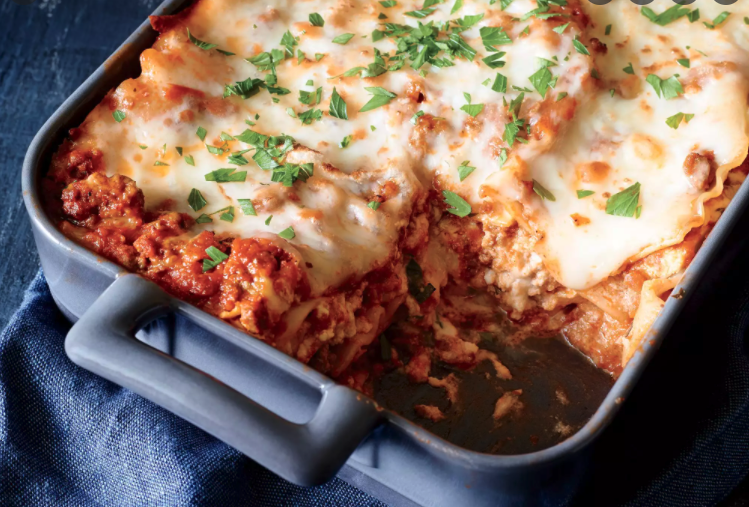

back
Lasagna

Delicious Lasagna Recipe
This simple lasagna is perfect for when you're short on time, but craving a comforting meal.
Ready in just over an hour, it requires only 50 minutes of cooking in the oven.Extra-lean ground beef
(which sometimes cooks up dry) works well here because it's combined with marinara to keep it moist.
For a quick and easy variation, feel free to use 9 whole lasagna noodles instead of 6 broken noodles,
using 3 noodles per layer. You also can sub fresh basil leaves for the parsley sprinkled on at the end.
- 1 1/2 cups fat-free ricotta cheese
- 6 ounces part-skim mozzarella cheese, shredded (about 1 1/2 cups)
- 1/4 cup fresh flat-leaf parsley leaves, divided
- 1 1/2 tablespoons unsalted butter, melted
- 1 tablespoon finely chopped fresh oregano
- 5 garlic cloves, minced and divided
- 1 large egg, lightly beaten
- 12 ounces extra-lean ground beef (93% lean)
- 1/2 teaspoon freshly ground black pepper
- 1/4 teaspoon crushed red pepper
- 1 (25-ounce) jar lower-sodium marinara sauce (such as Dell'Amore)
- Cooking spray
- 6 lasagna noodles, cooked
- 1 ounce Parmigiano-Reggiano cheese, grated (about 1/4 cup)
- Preheat oven to 375°.
- Combine ricotta, 2 ounces (about 1/2 cup) mozzarella, 2 tablespoons parsley, butter, oregano, 1 garlic clove, and egg; set aside.
- Place ground beef in a large non-stick skillet over medium-high heat; sprinkle with peppers and remaining 4 garlic cloves. Cook for 9 minutes or until beef is browned, stirring to crumble; drain. Return beef mixture to pan; stir in marinara sauce, and remove from heat.
- Spread 1/2 cup meat sauce in bottom of a broiler-safe 11 x 7-inch glass or ceramic baking dish coated with cooking spray. Cut bottom third off each noodle to form 6 long and 6 short noodles; cut short noodles in half to form 12 pieces. Arrange 2 long noodles along outside edges of dish; arrange 4 short noodle pieces along center of dish.
- Top noodles with 1 cup meat sauce. Top with 2 long noodles and 4 short noodle pieces, all of ricotta mixture, and 1 cup meat sauce. Arrange remaining 2 long noodles and 4 short noodle pieces on top. Spread remaining meat sauce over top noodles. Sprinkle evenly with remaining 4 ounces (1 cup) mozzarella cheese and Parmigiano-Reggiano cheese. Cover with foil coated with cooking spray.
- Bake at 375° for 30 minutes. Uncover and bake for an additional 10 minutes or until bubbly.
- Preheat broiler to high. (Keep lasagna in oven.)
- Broil lasagna for 1 to 2 minutes or until cheese is golden brown and sauce is bubbly. Remove from oven; let stand 10 minutes. Sprinkle with remaining 2 tablespoons parsley; cut into 6 pieces.